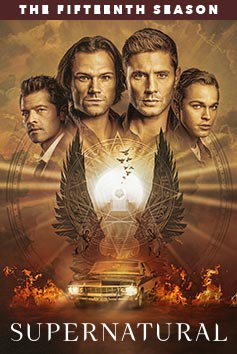
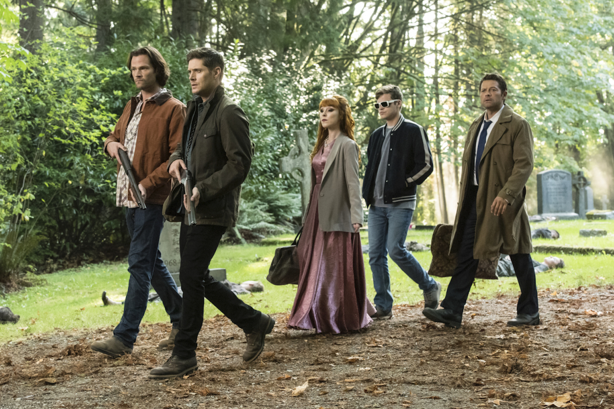
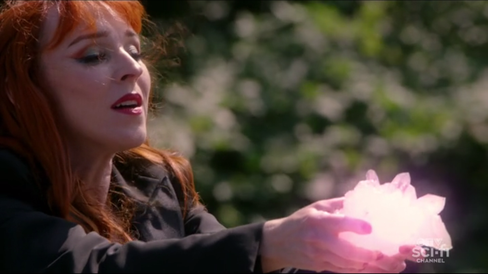
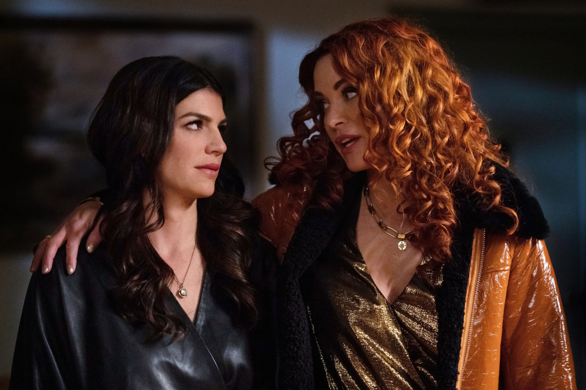
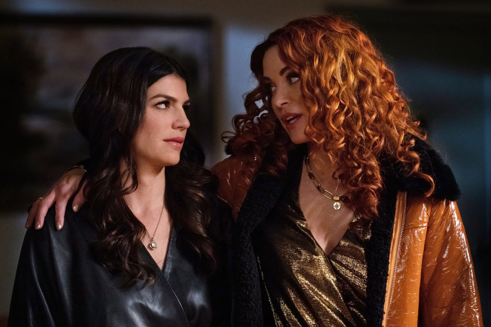
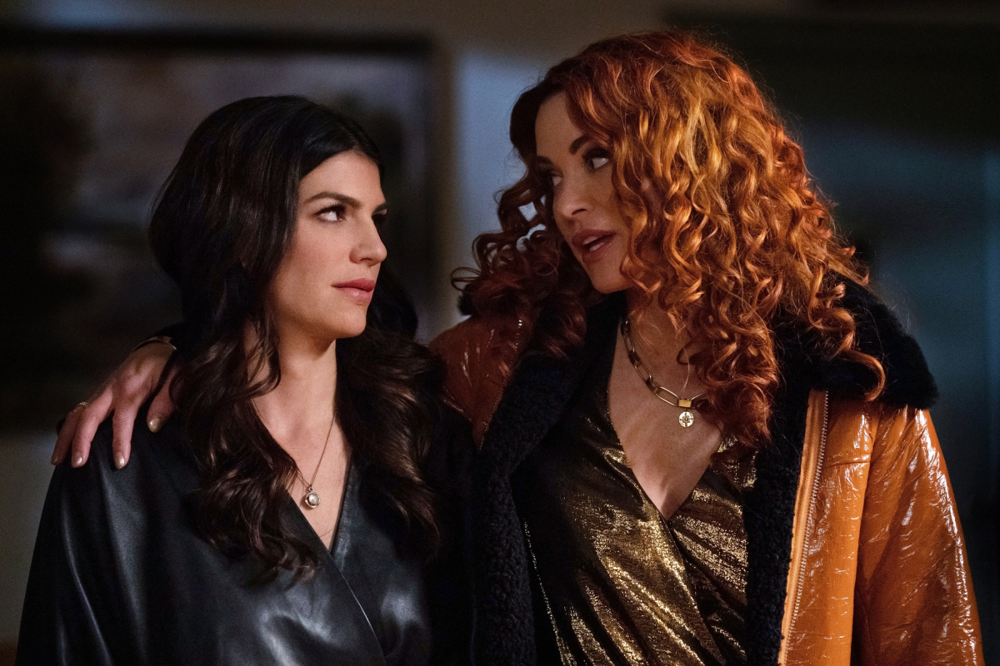

Temporada 15

Depois dos acontecimentos da temporada passada, Sam, Dean e Castiel são deixados para defender o mundo depois que todas as almas no inferno foram libertadas e estão de volta à Terra e livres para matar novamente.
Sam, Dean e Castiel chamam Rowena para ajudar a manter as almas do mal afastadas e obtém uma assistência inesperada de Ketch. Os irmãos, juntamente com Rowena trabalham incansavelmente para impedir que todo o inferno se solte. Castiel não pode perdoar uma traição arrogante.


Sam, Dean e Castiel continuam em busca de uma maneira de derrotar Chuck e isso os leva a lugares inesperados e a aliados improváveis. Uma busca pela única coisa que pode dar aos Winchesters uma vantagem contra Deus leva Sam e Dean à porta de Anael e a um segredo que pode ter morrido com Ruby. Enquanto isso, Castiel pede a Jack que faça o impensável para ajudar os irmãos em sua busca.
 

